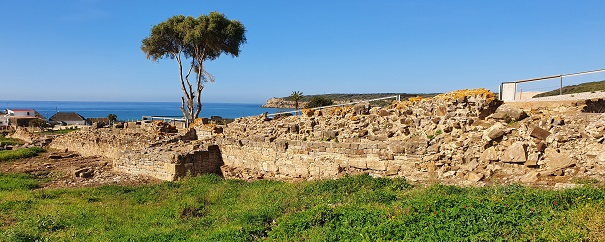
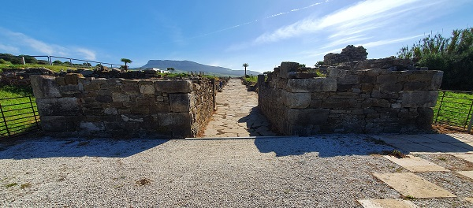
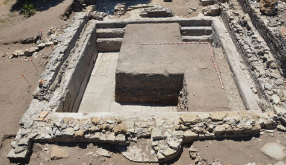
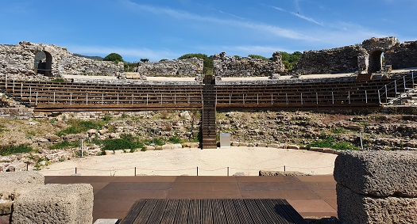
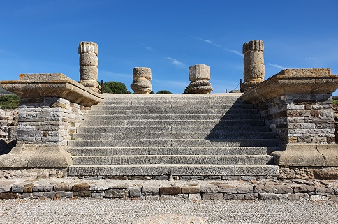
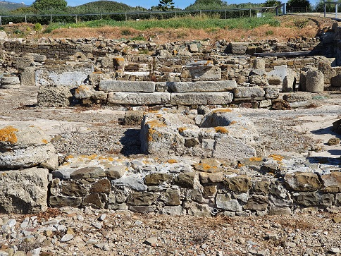
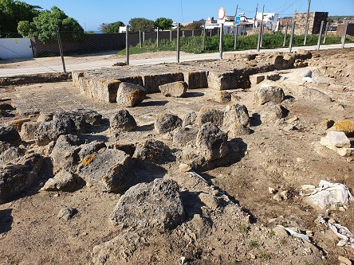

|
|
||||||||||||||||||||||||||||||||||||||||||||||
|
La
ciudad romana de Baelo Claudia nace
a finales del siglo II a.e.c. Su origen y desarrollo estuvieron muy
ligados al comercio con el norte de África, ya que era el puerto de unión con la
actual Tánger. La industria de salazón del pescado y el garum fueron sus principales fuentes de riqueza,
destacando la pesca del atún. La ciudad alcanzó su mayor esplendor desde el siglo I a.e.c. hasta el siglo II y fue emperador Claudio (41-54), quien le otorgó el rango de municipio romano. El declive económico de Baelo Claudia se inicia en la segunda mitad del siglo II, supuestamente por el terremoto que debió asolar la ciudad por esas fechas. En el siglo III experimenta un ligero rebrote del comercio, tras el cual, poco a poco entra en decadencia hasta su total abandono en el siglo VII.
Tres acueductos surtían de agua a la ciudad. La Cisterna y el Acueducto norte,
Realillo, son de época Augusto. El acueducto oriental, Punta Paloma, es de mitad del siglo I, y el acueducto
occidental de
Sierra de Plata de la primera mitad del siglo II. Acueducto que llevaba el agua
a la ciudad romana de Baelo Claudia.
La Muralla, edificada en época de Augusto, fue reparada y remozada con con el mismo trazado en la segunda mitad del siglo I. Se cree que no tenía un fin puramente defensivo, dado que era una época de paz y probablemente definiera el "pomoerium" de la ciudad. Tres puertas de acceso y con un perímetro de unos 1400m y estuvo reforzada con algo más de cuarenta torres de vigilancia. La vía romana que unía Carteia (San Roque) con Gades atravesaba la ciudad de Baelo, dando nombre a dos de sus puertas monumentales: la Puerta de Carteia, al este, y la Puerta de Gades, al oeste. También se ha identificado una tercera puerta al norte de la ciudad, la puerta de Asido.
 Ver: Murallas romanas
La Puerta Este, también llamada Puerta
de Carteia, se construye hacia el año 10 a.e.c., y su uso se mantiene hasta finales del siglo IV.
Era la entrada de la ciudad desde la calzada que llega de Carteia, dando acceso al Decumano
Máximo. Construida con grandes sillares de caliza asentados en seco y
Las Viviendas datan de los siglos I-III, probablemente estas viviendas estaban asociadas a la industria de salazón, como domicilio de los propietarios de las factorías o dependencias de las mismas. Destacamos la casa del Reloj, llamada así por el reloj de sol hallado y la casa del Oeste.
Las Factorías de salazón datan de época de Augusto, las conservadas son de los siglos I-III. Era la zona industrial dedicada a la salazón del pescado y a la producción de la celebre salsa de pescado denominada "garum". Junto a las factorías, se localiza el área portuaria. Se han sacado a la luz varias fábricas de salazón que representan el conjunto arqueológico más importante de la Península Ibérica, se extendían incluso más allá de la muralla. En época de Claudio alcanzan su máximo esplendor. A finales del siglo V prácticamente desaparecen.
El Mercado, Macellum se levantó a finales del siglo I, cuando el Foro quedó cerrado a la actividad comercial. En el siglo II sólo perviven las tiendas que abren sus puertas al Decumano Máximo. En el siglo II las tiendas interiores se emplean como vertedero y en época tardía se edifican viviendas. Poco después fue abandonado completamente.
A continuación tenemos la plaza Meridional y la Basílica. Una de las Basílicas mejores conservada. Probablemente fuera construida en época de Nerón sustituyendo otro edificio público. Con planta rectangular, ocupa una superficie de 35,50x19,50m. Conserva las columnas jónicas, algunas de las paredes y una estatua del Emperador Trajano. Tenia dos plantas. Los tambores y capiteles de las columnas se labraron en calcarenita. Los muros y columnas estaban recubiertos con capas de estuco blanco, y en algunas zonas como los capiteles pudieron estar policromadas. Se han documentado restos de pintura roja y amarilla.
El Foro es de época de Augusto, y se remodela en los reinados de Claudio y Nerón. De forma rectangular, de 37x30 m. Conserva el pavimento original de losas de Tarifa. Con pórticos en tres de sus lados, a su alrededor se distribuían los principales edificios públicos, el templo del emperador, la curia, la basílica, archivo municipal, sala votaciones, escuela, las tiendas....Posiblemente el mejor conservado de la península.
El trazado del Decumano Máximo corresponde a la época de Augusto, siendo remodelado posteriormente junto al resto de las importantes obras llevadas a cabo en la segunda mitad del siglo I. Está toda enlosada con grandes lajas de piedra caliza gris. Se aprecia el perfecto estado de conservación del suelo original y podemos ver los numerosos restos de capiteles y pilares que formaban los pórticos. En algunos tramos se observa que está levantado por el terremoto que sufrió la ciudad. Ver Calzadas romanas
La puerta de Gades también tiene dos torres que flanquean el paso. Es simétrica a su opuesta la puerta Este, las une decumanus maximus. Construida con distintas técnicas, el almohadillado que refuerza la similitud entre ambas puertas es sólo exterior, y la estructura del conjunto está realizada a base de opus caementicium.

Las Termas de la Ciudad, son de finales del siglo I o inicios del siglo II. En uso hasta finales del siglo IV. Se hallan en la parte occidental de la ciudad y mantienen la escalinata de acceso casi en perfecto estado. Se pueden ver algunos arcos y pilastras distinguiéndose perfectamente los tres tipos de salas para las aguas frías, templadas y calientes. Se ha considerado que podrían tener carácter privado por su reducido tamaño. Se han excavado parcialmente y se puede observar el sistema de calefacción a través del hipocaustum, y las distintas salas destinadas a las tareas de aseo.
Ver: Termas romanas Las Termas Marítimas, supuestamente más grandes con una actividad entre el siglo II y el V. Se ha excavado parcialmente cinco habitaciones, y se ha hallado una gran piscina destinada al baño, de más de 40m2 de planta, así como una gran cisterna. Foto: UCA

El Teatro fue construido en el siglo I, aproximadamente hacia el 60-70. A finales del siglo II o inicios del III fue abandonado y ocupado por viviendas y por una necrópolis cristiana, desde mediados del siglo IV hasta el VII. Se ubica en el lugar de mayor pendiente para aprovechar la inclinación natural del terreno para la disposición del graderío. Tiene siete vomitorios que dan acceso a los diferentes niveles de la cavea. Ver Teatros romanos

El Capitolio se edifica entre los años 50 y 70. En el se hallaban los templos dedicados al culto de la Tríada Capitolina. Únicamente quedan restos de uno de ellos, el de Júpiter. Los tres son casi idénticos y representan la religión oficial, conformando el área sacra de Baelo.
 Ver: Templos romanos El Templo de Isis, edificado en el año 70. Su ubicación nos hace pensar en la importancia de su culto en Baelo. Estaba rodeado por un muropara perservar su intimidad. Su planta presentaba los cinco espacios específicos de los Isea: el pórtico, el patio, el templo propiamente dicho, los aposentos de los sacerdotes y una sala de iniciación. Es uno de los templos de Isis mejor conservados.
 En la Necrópolis sureste hay incineraciones: del siglo I a.e.c. al siglo I; y inhumaciones: del III al IV. La ciudad de Baelo Claudia tiene tres necrópolis. Dos de ellas situadas a la salida de las puertas este y oeste de la ciudad, jalonando el camino; otra, la ubicada al noreste, se encuentra entre el acueducto oriental y la carretera actual de acceso a Bolonia.

En mayo de 2021, descubren una nueva factoría de salazones, una taberna y otro edificio en Baelo Claudia. La fábrica está dispuesta en dos áreas, tiene ocho piletas en muy buen estado de conservación y era la tercera más importante de todo el conjunto arqueológico.
Más info: http://www.museosdeandalucia.es/web/conjuntoarqueologicobaeloclaudia
|
|
CIUDADES DE HISPANIA
|
|
|
| HISPANIA |